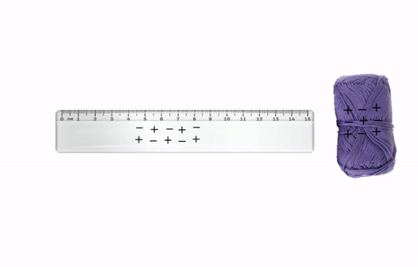
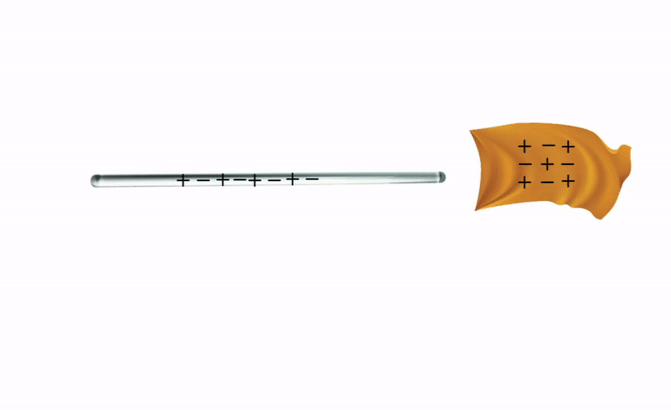

• Siswa dapat mengidentifikasi jenis-jenis muatan listrik.
Pada umumnya jumlah elektron dan proton pada atom sebuah benda adalah sama, sehingga atom-atom pada benda tidak bermuatan atau netral. Jika benda tersebut netral, maka benda tersebut dapat diubah menjadi bermuatan. Salah satu cara untuk mengubah benda menjadi bermuatan adalah dengan menggosokkan benda. Ketika dua benda saling digosokkan, maka elektron dari benda yang satu akan pindah ke benda yang lain, sehingga benda yang melepas elektron (kekurangan elektron) akan bermuatan positif, dan benda yang menerima elektron (kelebihan elektron) akan bermuatan negatif. Simak dan perhatikan percobaan pada video di bawah untuk membuat benda bermuatan dengan cara digosok.
Tonton video terlebih dahulu!
Setelah menyaksikan video di atas dapat disimpulkan bahwa batang kaca yang digosokkan pada kain sutra akan bermuatan positif dan penggaris plastik yang digosokkan pada kain wol akan bermuatan negatif. Dengan demikian ada dua jenis muatan yaitu muatan positif dan negatif, setiap muatan yang sama akan tolak menolak sedangkan muatan yang tidak sama akan tarik menarik.
|  |  |
Deret tribolistrik menunjukkan urutan deret benda yang akan bermuatan negatif bila digosok dengan sembarang benda di atasnya dan akan bermuatan positif bila digosok dengan benda di bawahnya. Misalkan jika gelas digosok pada wol, maka gelas akan bermuatan positif dan wol akan bermuatan negatif. Berikut tabel deret tribolistrik.
| No | Nama Benda | No | Nama Benda |
| 1 | Bulu kelinci | 8 | Kayu |
| 2 | Gelas (kaca) | 9 | Batu ambar |
| 3 | Mika (plastik) | 10 | Damar |
| 4 | Wol | 11 | Logam (Cu, Ni, Ag) |
| 5 | Bulu kucing | 12 | Belerang |
| 6 | Sutra | 13 | Logam (Pt, Au) |
| 7 | Kapas | 14 | Solenoid |
Salah satu cara untuk mengetahui muatan listrik pada benda adalah dengan menggunakan elektroskop. Elektroskop memiliki tiga bagian utama, yaitu kepala elektroskop, daun elektroskop yang terbuat dari lempeng emas atau aluminium, dan logam penghantar atau konduktor yang menghubungkan kepala elektroskop dengan daun elektroskop. Daun elektroskop akan membuka apabila kepala elektroskop didekatkan dengan benda yang bermuatan listrik.